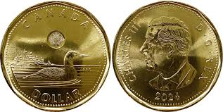
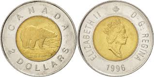
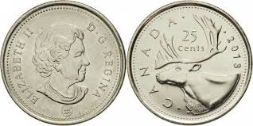
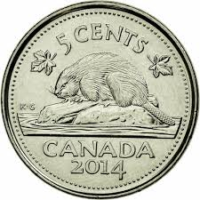
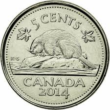
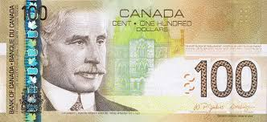
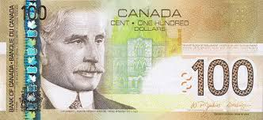

Ekonomi
Kanada'nın temel gelir kaynakları, GSYİH'nın büyük bir kısmını oluşturan hizmet sektörü ve küresel ihracatta önemli bir yer tutan zengin doğal kaynaklar (özellikle petrol, doğal gaz, madenler ve orman ürünleri) ile gelişmiş imalat sanayi (otomotiv ve havacılık) tarafından desteklenen çeşitlendirilmiş bir ekonomik yapıya dayanmaktadır.
| Sektör | GSYİH'ya Katkı Payı (Tahmini) | Temel Gelir Kaynakları ve Ekonomik Rolü |
|---|---|---|
| 1. Hizmet Sektörü | %70'in Üzerinde |
|
| 2. Doğal Kaynaklar | %10 - %15 Arası |
|
| 3. İmalat Sanayii | %10 Civarında |
|

Kanada ekonomisi, dış ticarete yüksek oranda bağımlıdır ve enerji, hammadde ve imalat ürünleri ticaretinde küresel bir oyuncudur. Başlıca ticaret ortağı ABD'dir; iki ülke arasındaki entegrasyon çok yüksektir.
📈 En Çok İhraç Edilen Ürünler
| Sıra | İhraç Ürünü | Ekonomik Önemi |
|---|---|---|
| 1. | Mineral Yakıtlar (Petrol, Gaz) | Net enerji ihracatçısı konumundadır; en büyük gelir kaynaklarından biridir. |
| 2. | Otomobiller ve Taşıtlar | ABD pazarına yönelik güçlü bir otomotiv endüstrisi mevcuttur. |
| 3. | Kıymetli Metaller ve Cevherler | Özellikle altın, çinko ve uranyum gibi madenlerin ihracatı. |

Kanada'nın sanayisi ve yüksek tüketim gücü, özellikle gelişmiş makineler, elektronik ve tüketim malları ithalatını zorunlu kılmaktadır.
📉 En Çok İthal Edilen Ürünler
| Sıra | İthal Ürünü | Ekonomik Önemi |
|---|---|---|
| 1. | Otomobiller ve Taşıt Parçaları | Yurt içi tüketimi ve imalat sanayiini destekleyen kritik ithalat. |
| 2. | Makineler ve Elektrikli Cihazlar | Yüksek teknoloji ve bilişim sektörünün temel ihtiyacı. |
| 3. | İlaç ve Farmasötik Ürünler | Gelişmiş sağlık sisteminin devamlılığı için hayati önem taşır. |

Kanada, yüksek gelirli ve güçlü sosyal refah programlarına sahip bir ülke olmasına rağmen, küresel trendlere paralel olarak gelir eşitsizliğinde son yıllarda hafif bir artış gözlenmektedir.
Gini Katsayısı Nedir?
Gini Katsayısı, bir ülkedeki veya bölgedeki gelir veya servet dağılımının eşitsizliğini ölçmek için kullanılan en yaygın ve güvenilir istatistiksel göstergelerden biridir. İtalyan istatistikçi Corrado Gini tarafından 1912 yılında geliştirilmiştir.
Amacı, bir ekonomideki toplam gelirin veya servetin nüfus arasında ne kadar eşit veya adaletsiz dağıtıldığını sayısal bir değerle ifade etmektir.
• Gelir dağılımını ölçmek için uluslararası alanda en çok kullanılan araç Gini Katsayısı'dır.
• Değer Aralığı: Bu katsayı 0 ile 1 arasında bir değer alır.
• Anlamı:
0 (Sıfır): Mükemmel eşitliği (herkesin geliri aynı) ifade eder.
• 1 (Bir): Mükemmel eşitsizliği (tüm gelirin tek bir kişinin elinde olması) ifade eder.
| Gini Değeri | Anlamı | Açıklama |
|---|---|---|
| 0 (Sıfır) | Mükemmel Eşitlik | Tüm nüfusun aynı gelire sahip olduğu ideal durumu ifade eder. |
| 1 (Bir) | Mükemmel Eşitsizlik | Tüm gelirin tek bir kişinin elinde toplandığı teorik durumu ifade eder. |
| 0.30 - 0.35 | Düzey Eşitsizlik | Kanada gibi gelişmiş ekonomilerin, sosyal yardımlar sonrası (net gelir) dağılımında görülen seviyedir. |
Kanada'da Gelir Dağılımına İlişkin Önemli Nokta
Kanada'nın Gini Katsayısı, genellikle vergi ve sosyal yardımlar gibi devlet transferleri öncesinde yüksektir. Ancak, güçlü sosyal güvenlik ağları (evrensel sağlık sigortası, emeklilik ve işsizlik yardımları) ve aşamalı vergilendirme sistemi, eşitsizliği önemli ölçüde azaltarak **Net Gelir Gini Katsayısını** OECD ortalamasının altında tutmaktadır. Bu durum, devlet politikalarının refahın yeniden dağıtımındaki etkinliğini gösterir.
Kullanım Alanları ve Önemli Farklılıklar
Gini katsayısı, politikacıların, ekonomistlerin ve sosyal bilimcilerin bir ülkenin refah seviyesi ve sosyal yapısı hakkında fikir edinmesi için hayati bir göstergedir.
Piyasa Geliri vs. Net Gelir
Gini katsayısı iki farklı gelir türü için hesaplanabilir ve bu, eşitsizliğin kaynağını anlamak için kritik öneme sahiptir:
1. Piyasa Geliri Gini Katsayısı (Vergi ve Transfer Öncesi): Maaşlar, kiralar, faizler gibi piyasadan elde edilen gelir dağılımını gösterir. Bu katsayı genellikle yüksektir.
2. Gelir Gini Katsayısı (Vergi ve Transfer Sonrası): Devletin sosyal yardımları (işsizlik, emeklilik, çocuk yardımı) eklendikten ve vergiler çıkarıldıktan sonraki nihai gelir dağılımını gösterir. Gelişmiş sosyal devletlerde, bu katsayı, piyasa geliri katsayısına göre önemli ölçüde düşük çıkar.
Kanada'da Piyasa Geliri Gini katsayısı yüksek (yaklaşık 0.45) iken, güçlü sosyal yardımlar ve ilerici vergilendirme sayesinde Net Gelir Gini Katsayısı 0.32-0.34 aralığına düşmektedir. Bu durum, devletin sosyal politikalarının eşitsizliği azaltmadaki gücünü ortaya koyar.
| Gelir Türü | Tanım | Ortanca Gelir (2025 CAD) |
|---|---|---|
| Piyasa Geliri | Çalışma (maaş, ücretler) ve yatırımdan (faiz, temettü) elde edilen geliri ifade eder. | $84,000 |
| Net Gelir | Piyasa Gelirine hükümet transferlerinin (emeklilik, sosyal yardım vb.) eklenmesi ve gelir vergilerinin çıkarılmasıyla bulunan gelirdir. | $73,000 |
Kişi başına düşen milli gelir, bir ülkenin toplam ekonomik gücünün (milli gelirin) o ülkenin toplam nüfusuna bölünmesiyle elde edilen ortalama gelirdir.
Bu gösterge, o ülkenin vatandaşlarının ortalama yaşam standardı ve refah düzeyi hakkında genel bir fikir verir.
• Nasıl Hesaplanır: En yaygın kullanılan yöntem, Gayri Safi Yurt İçi Hasıla (GSYİH) verisi üzerinden hesaplamaktır.

• GSYİH (GDP): Bir ülkenin sınırları içerisinde, belirli bir dönemde (genellikle bir yıl) üretilen tüm nihai mal ve hizmetlerin toplam piyasa değeridir.
• GSMH (GNP): Bir ülkenin vatandaşlarının hem yurt içinde hem de yurt dışında elde ettikleri toplam geliri ifade eder.
Uluslararası karşılaştırmalar genellikle ABD Doları ($) cinsinden yapılır ve bu hesaplamalarda iki farklı yöntem kullanılır:
1. Nominal Kişi Başı Gelir: Cari döviz kurları kullanılarak hesaplanır. Bu yöntem, döviz kuru dalgalanmalarına karşı hassastır.
2. Satın Alma Gücü Paritesi (PPP) Kişi Başı Gelir: Farklı ülkelerdeki fiyat seviyelerini dikkate alarak hesaplanır. Bu yöntem, yaşam maliyetlerindeki farklılıkları daha iyi yansıtır ve uluslararası karşılaştırmalarda daha güvenilir sonuçlar verir.
| Yıl (Yaklaşık) | Kişi Başına GSYİH (Nominal USD) | Piyasa Geliri Gini Katsayısı (Vergi Öncesi) |
|---|---|---|
| **1995** | ~20.000 $ | 0.430 - 0.440 Aralığı (Düşük Eşitsizlik) |
| **2005** | ~40.000 $ | 0.470 - 0.480 Aralığı |
| **2015** | ~44.000 $ | 0.490 - 0.500 Aralığı |
| **2023** | ~53.242 $ | 0.500 - 0.510 Aralığı (Yüksek Eşitsizlik) |
| **2025** | ~58.420 $ | 0.500 - 0.510 Aralığı (Yüksek Eşitsizlik) |
Kanada'nın resmi para birimi Kanada Doları'dır (CAD). Kanada Doları, genellikle "$" veya "C$" sembolleriyle gösterilir ve dünya genelinde yaygın olarak kullanılan bir para birimidir. Kanada Doları, küresel olarak en çok ticareti yapılan rezerv para birimleri arasında yer alan, istikrarı ve "emtia para birimi" olma özelliği ile bilinen önemli bir para birimidir.
| Para Birimi Özellikleri | |
|---|---|
| Para Biriminin Adı | **Kanada Doları** (Canadian Dollar) |
| Uluslararası Kodu | **CAD** (ISO 4217 Kodu) |
| Sembolü | $ (Diğer dolarlardan ayırmak için: **C\$** veya **Can\$**) |
| Alt Birimi | 1 Kanada Doları = **100 Cent** (Sent) |
| Merkez Bankası | **Bank of Canada** (Kanada Bankası) |
| Para Tipi | Önemli bir **Emtia Para Birimi** (Commodity Currency) |
Madeni Paralar ve Banknotlar (İsimleri)
Kanada'nın madeni paraları ve banknotları, ülkenin doğal güzelliklerini, tarihini ve önemli figürlerini yansıtan tasarımlara sahiptir.
Madeni Paralar:
• 1 Dolar (C$1): Üzerinde Kanada'nın ulusal sembollerinden biri olan "Loon" (Büyük Dalgıç Kuşu) resmi olduğu için "Loonie" (Luni) olarak adlandırılır.
• 2 Dolar (C$2): Toonie" (Tuni) olarak anılır. Bu isim, "Two" (iki) kelimesi ile "Loonie" kelimesinin birleşimiyle oluşmuştur.
• 25 Cent: Quarter olarak bilinir.
• 10 Cent: Dime olarak adlandırılır.
• 5 Cent: Nickel olarak bilinir.
• 1 Cent: Penny olarak adlandırılır. (Not: Kanada 2013 yılında 1 cent madeni parayı tedavülden kaldırmıştır.)



 

Banknotlar: (Polimer Teknolojisi)
Kanada, 2011 yılından itibaren dayanıklı, çevre dostu ve ileri güvenlik özelliklerine sahip polimer (plastik) banknotlara geçmiştir. Bu banknotlar, sahteciliğe karşı son derece dayanıklıdır.
• Sık kullanılan banknotlar: 5, 10, 20, 50 ve 100 C$'dır.
 

Ekonomik Önemi ve Değerini Etkileyen Faktörler
Kanada Doları, uluslararası piyasalarda güçlü ve güvenilir bir para birimi olarak kabul edilir. Değerini etkileyen temel faktörler şunlardır:
• Emtia Para Birimi (Commodity Currency): Kanada, dünyanın önde gelen petrol, doğal gaz, mineraller, kereste ve diğer doğal kaynak ihracatçısıdır. Bu nedenle, Kanada Doları'nın değeri, büyük ölçüde küresel emtia fiyatları ile paralel hareket eder. Petrol fiyatları yükseldiğinde, CAD genellikle değer kazanır.
• ABD Ekonomisi ve Ticareti: Kanada'nın ticaretinin büyük bir kısmı (%80'den fazlası) ABD ile yapılmaktadır. Bu, CAD/USD çapraz kurunu Kanada ekonomisi için en önemli kur haline getirir. ABD ekonomisindeki güçlü toparlanmalar veya faiz artışları, CAD'nin değerini doğrudan etkileyebilir.
• Kanada Merkez Bankası (Bank of Canada) Politikaları: Merkez Bankası'nın faiz oranı kararları ve para politikası, tıpkı diğer büyük para birimlerinde olduğu gibi CAD'nin değerini belirleyen ana etkenlerdir.
• Ekonomik ve Politik İstikrar: Kanada, sağlam bankacılık sistemi, düşük enflasyon oranları ve politik istikrarıyla uluslararası yatırımcılar için güvenilir bir liman olarak görülür.
🔄 CAD/₺ Kur İlişkisini Belirleyen Detaylı Faktörler
| Etki Alanı | Kanada Doları (CAD) Faktörü | Türk Lirası (₺) Faktörü |
|---|---|---|
| Temel İhracat | **Petrol ve Doğal Gaz Fiyatları** (Yükselmesi CAD'yi güçlendirir.) | Dış ticaret dengesi (Cari Açık baskısı). |
| Para Politikası | Kanada Merkez Bankası Faiz Kararları. | **Türkiye Cumhuriyeti Merkez Bankası (TCMB) Politikaları** (Reel faiz düzeyi). |
| En Önemli Ortak | ABD Ekonomik Performansı ve FED Politikaları. | Küresel Risk İştahı ve Yatırımcı Güveni. |
| İç Risk | - | **Yüksek Enflasyon** ve Finansal İstikrar Algısı. |
Endüstrileşme, üretim faktörlerinin (emek, sermaye, toprak) sanayi sektörüne kaymasıyla karakterize edilen bir ekonomik ve sosyal değişim dönemidir.
Endüstrileşme, ekonomik büyümeyi hızlandırır, şehirleşmeyi teşvik eder ve yaşam standartlarını yükseltir. Ancak, aynı zamanda çevresel bozulma, işçi hakları sorunları ve sosyal eşitsizlik gibi zorlukları da beraberinde getirebilir.
Bu süreç, genellikle aşağıdakilerin kullanımının yaygınlaşmasıyla hızlanır:
• Teknoloji ve Makineler: Üretkenliği artıran, emek yoğunluğu azaltan yeni icatların kullanımı.
• Kitlesel Üretim: Yüksek miktarda, standart ürünlerin düşük maliyetle üretilmesi.
• Enerji Kaynakları: Kömür, petrol, elektrik gibi yeni enerji kaynaklarının fabrikalarda kullanılması.
• Ulaşım ve İletişim: Demiryolları, buharlı gemiler ve telgraf gibi yenilikler, hammadde ve ürünlerin daha hızlı taşınmasını sağladı.
• 1. Endüstri Devrimi: Mekanizasyon (18. Yüzyıl Sonu) Bu dönem, endüstrileşmenin başlangıcıdır.
• Teknoloji: Buhar gücünün icadı ve kullanımı (özellikle tekstil endüstrisinde).
• Enerji Kaynağı: Kömür.
• Temel Dönüşüm: Üretimin ev atölyelerinden fabrikalara (fabrika sistemi) geçmesi. Tarım toplumundan sanayi toplumuna geçişin ilk adımıdır.


• 2. Endüstri Devrimi: Seri Üretim (19. Yüzyıl Sonu - 20. Yüzyıl Başı): Bu dönem, endüstrileşmenin başlangıcıdır.
• Teknoloji: Elektrik enerjisinin yaygınlaşması, yanmalı motorlar.
• Metot: Seri üretim hatları (assembly lines) ve Taylorizm (bilimsel yönetim).
• Temel Dönüşüm: Ford'un otomobil fabrikalarındaki gibi kitlesel üretimin başlaması. Kimya ve çelik sanayileri yükselişe geçti.


• 3. Endüstri Devrimi: Dijitalleşme (20. Yüzyıl Ortası): Bu dönem, endüstrileşmenin başlangıcıdır.
• Teknoloji: Bilgisayarlar, internet, programlanabilir mantık denetleyicileri (PLC).
• Metot: Üretimin elektronik ve IT sistemleriyle otomatikleştirilmesi.
• Temel Dönüşüm: Globalleşme hızlandı, hizmet sektörü sanayiden daha fazla büyümeye başladı.
• 4. Endüstri Devrimi: Siber-Fiziksel Sistemler (Günümüz): Bu dönem, endüstrileşmenin başlangıcıdır.
• Teknoloji: Yapay zekâ (AI), Nesnelerin İnterneti (IoT), büyük veri analitiği, bulut bilişim, robotik.
• Metot: Siber-Fiziksel Sistemler aracılığıyla gerçek zamanlı, tamamen birbirine bağlı ve akıllı (smart) fabrikalar oluşturulması.
• Temel Dönüşüm: Üretim esnekleşir, makineler birbirleriyle ve insanlarla iletişim kurar (Akıllı Fabrikalar).

⚙️ Endüstrileşme Süreci: Dört Sanayi Devrimi Karşılaştırması
| Aşama | Temel Odak Noktası | Ana Teknoloji ve Enerji | Toplumsal ve Ekonomik Dönüşüm |
|---|---|---|---|
| **1. Sanayi Devrimi** (18. Yüzyıl Sonu) | Mekanizasyon | Buhar Gücü, Su Gücü, Kömür. Mekanik tezgahlar. | Üretimin **Fabrika Sistemine** geçişi. Kırsaldan kentlere göç (Kentleşme). |
| **2. Sanayi Devrimi** (19. Yüzyıl Sonu) | Seri Üretim | Elektrik Enerjisi. Montaj hatları ve Kitlesel Üretim. | Ulaşım ve iletişimde devrim (Telefon, Otomobil). **Kitlesel tüketim**in doğuşu. |
| **3. Sanayi Devrimi** (20. Yüzyıl Ortası) | Dijitalleşme ve Otomasyon | Bilgisayarlar, İnternet, Elektronik. Programlanabilir Mantık Denetleyicileri (PLC). | Üretimde esneklik ve hassasiyetin artması. **Hizmet Sektörünün** yükselişi. |
| **4. Sanayi Devrimi** (Günümüz - Endüstri 4.0) | Siber-Fiziksel Sistemler ve Akıllılık | Yapay Zekâ (AI), Nesnelerin İnterneti (IoT), Bulut Bilişim, Büyük Veri. | Tüm üretim süreçlerinin gerçek zamanlı **ağa bağlanması** ve özerk karar alma yeteneği. |
| Bu süreç, ekonomilerin tarım temelli yapılardan, ileri teknoloji ve otomasyon merkezli yapılara doğru geçirdiği yapısal dönüşümü özetlemektedir. | |||